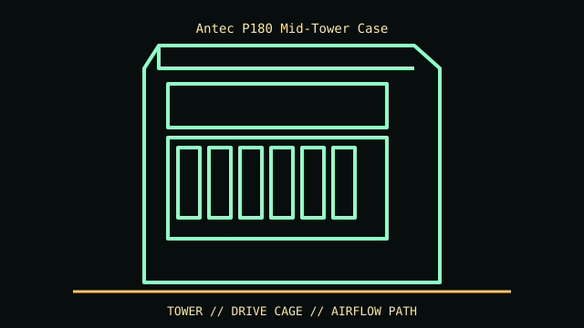

[ IDENTIFIED ENCLOSURE // ANTEC P180 (ORIGINAL, NOT P180B/P182) ]
Antec P180 Mid-Tower Case
525 × 205 × 505 mm (H × W × D); dual-chamber thermal design with separated lower PSU/drive compartment. The PSU compartment and bottom intake require clearance beneath the case.

REVISION / FIT CAVEAT: P180, P180B and P182 are related but front-panel/I/O and some drive-cage details differ. Antec P183 is a later revision. Check side label and front I/O before applying accessory fit.
Model-specific mechanical record
| Catalog leaf | Tower and legacy desktop cases |
|---|---|
| Identity / generation | Antec P180 (original, not P180B/P182) |
| Dimensions / clearance | 525 × 205 × 505 mm (H × W × D); dual-chamber thermal design with separated lower PSU/drive compartment. The PSU compartment and bottom intake require clearance beneath the case. |
| Drive bays / mounts | Four external 5.25-inch bays, one external 3.5-inch bay and six internal 3.5-inch positions split between upper and lower cages. |
| Board / chassis compatibility | ATX/microATX tower; legacy GPU length is constrained by upper drive cage and installed fan. Check PSU depth, lower chamber airflow and board edge against original manual. |
| Revision identification | P180, P180B and P182 are related but front-panel/I/O and some drive-cage details differ. Antec P183 is a later revision. Check side label and front I/O before applying accessory fit. |
Compatibility and preservation
ATX/microATX tower; legacy GPU length is constrained by upper drive cage and installed fan. Check PSU depth, lower chamber airflow and board edge against original manual.
Preserve upper/lower HDD cages, silicone grommets, top/rear tri-cool fans and side-panel damping material. Damping sheets and plastics are aging; avoid solvent and heat.
Before transfer or restoration, photograph the complete model label, assembly/board revisions, bay/backplane identifiers and included accessories. Measure the actual specimen when planning installation or shipping; nominal envelope figures may exclude protruding feet, rails, doors or cables.
Manufacturer manuals and archival sources
- Antec P180 User Manual scan — ManualsLibModel-specific manufacturer specification, service manual, or technical reference used for the listed dimensions and mechanical configuration.
- Antec P180 manufacturer-manual mirror — ManyManualsSupplemental model documentation or institutional/technical archival record; use the exact product code and manual revision for a specimen.
Listings distinguish base configuration from optional drive, PSU, fan, rack and accessory kits. Do not combine maximum capacities if cages or components occupy the same volume.